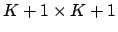

Next: Caveats
Up: Binomial Logistic Regression
Previous: Parameter Estimation
Setting the equations in Eq. 11 equal to zero results in a system of  nonlinear equations each with unknown variables. The solution to the system is a vector with elements,
nonlinear equations each with unknown variables. The solution to the system is a vector with elements,  . After verifying that the matrix of second partial derivatives is negative definite, and that the solution is the global maximum rather than a local maximum, then we can conclude that this vector contains the parameter estimates for which the observed data would have the highest probability of occurrence. However, solving a system of nonlinear equations is not easy--the solution cannot be derived algebraically as it can in the case of linear equations. The solution must be numerically estimated using an iterative process. Perhaps the most popular method for solving systems of nonlinear equations is Newton's method, also called the Newton-Raphson method.
. After verifying that the matrix of second partial derivatives is negative definite, and that the solution is the global maximum rather than a local maximum, then we can conclude that this vector contains the parameter estimates for which the observed data would have the highest probability of occurrence. However, solving a system of nonlinear equations is not easy--the solution cannot be derived algebraically as it can in the case of linear equations. The solution must be numerically estimated using an iterative process. Perhaps the most popular method for solving systems of nonlinear equations is Newton's method, also called the Newton-Raphson method.
Newton's method begins with an initial guess for the solution then uses the first two terms of the Taylor polynomial evaluated at the initial guess to come up with another estimate that is closer to the solution. This process continues until it converges (hopefully) to the actual solution. Recall that the Taylor polynomial of degree for  at the point is defined as the first terms of the Taylor series for :
at the point is defined as the first terms of the Taylor series for :
provided that the first derivatives of at all exist. The first degree Taylor polynomial is also the equation for the line tangent to at the point
. The point at which the tangent line crosses the x-axis, , is used in the next approximation of the root to be found where . The first step in Newton's method is to take the first degree Taylor polynomial as an approximation for , which we want to set equal to zero:
Solving for  , we have:
, we have:
This new value of is the next approximation for the root. We let and continue in the same manner to generate
, until successive approximations converge.
Generalizing Newton's method to a system of equations is not difficult. In our case, the equations whose roots we want to solve are those in Eq. 11, the first derivative of the log-likelihood function. Since Eq. 11 is actually a system of equations whose roots we want to find simultaneously, it is more convenient to use matrix notation to express each step of the Newton-Raphson method. We can write Eq. 11 as
. Let
represent the vector of initial approximations for each , then the first step of Newton-Raphson can be expressed as:
![$\displaystyle \boldsymbol{\beta}^{(1)} = \boldsymbol{\beta}^{(0)} + [-l^{\prime\prime}(\boldsymbol{\beta}^{(0)})]^{-1} \cdot l^{\prime}(\boldsymbol{\beta}^{(0)})$](img81.png) |
(20) |
Let
 be a column vector of length
be a column vector of length  with elements
. Note that each element of
can also be written as
, the expected value of
with elements
. Note that each element of
can also be written as
, the expected value of  . Using matrix multiplication, we can show that:
. Using matrix multiplication, we can show that:
is a column vector of length whose elements are
, as derived in Eq. 11. Now, let
 be a square matrix of order , with elements
on the diagonal and zeros everywhere else. Again, using matrix multiplication, we can verify that
be a square matrix of order , with elements
on the diagonal and zeros everywhere else. Again, using matrix multiplication, we can verify that
is a
 square matrix with elements
. Now, Eq. 20 can be written:
Continue applying Eq. 23 until there is essentially no change between the elements of
 from one iteration to the next. At that point, the maximum likelihood estimates are said to have converged, and Eq. 22 will hold the variance-covariance matrix of the estimates.
from one iteration to the next. At that point, the maximum likelihood estimates are said to have converged, and Eq. 22 will hold the variance-covariance matrix of the estimates.
Next: Caveats
Up: Binomial Logistic Regression
Previous: Parameter Estimation
Scott Czepiel
http://czep.net/contact.html